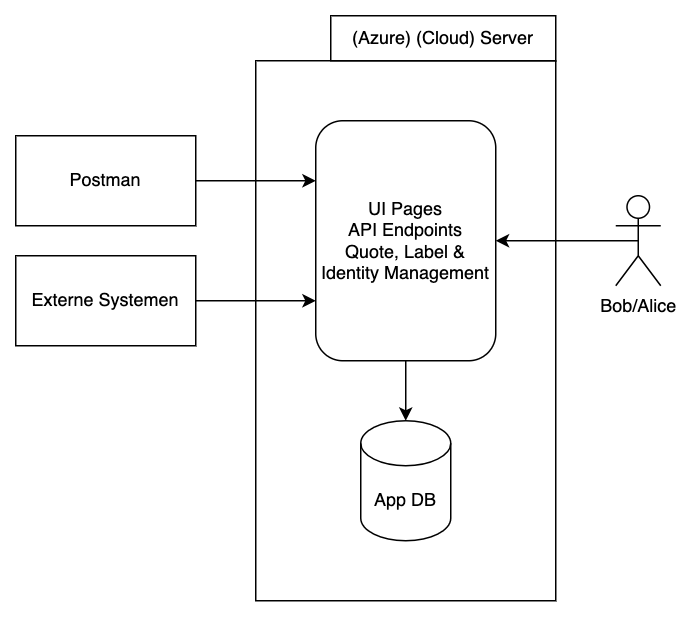

Microservices
Monolithische Applicaties
Een traditionele applicatie bestaat uit een enkel uitvoerbaar bestand. De volledige broncode is verweven. Builden, deployen, uitvoeren en beschikbaarheid is een alles-of-niets-verhaal. Dit noemen we monolithische (≈ bestaande uit één steen) applicaties.

Voordelen van een dergelijke applicatiearchitectuur zijn onder andere:
-
Je kan tijdens het ontwikkelen gemakkelijk door de volledige codebase navigeren met Ctrl/Command+Click.
-
Je hoeft tijdens deployment slechts één applicatie te installeren.
-
Er is geen (netwerk)overhead op de communicatie tussen modules binnen dezelfde app.
De hoge graad van verwevenheid van het geheel heeft ook nadelen:
-
De volledige app is up of down.
-
Schalen om meer load te verwerken, kent geen granulariteit
-
Vertical Scaling: krachtigere server.
-
Horizontal Scaling: de gehele app n keer deployen.
-
Microservices
Wanneer voor een IT-project aspecten zoals granulaire schaalbaarheid, verschillende soorten databanken, verschillend onderhoudsinterval van componenten, verschillende (kritieke) impact van componenten op de business,… van toepassing zijn, is het opsplitsen van de applicatie in meerdere kleine aparte applicaties een logisch gevolg.
Een microservice is niet meer dan een deel van een applicatie of IT-systeem dat code- en deploygewijs volledig losgetrokken wordt en verantwoordelijk is voor een duidelijk afgelijnde business functie.
| Het kan interessant zijn een zijsprong te maken naar DDD en DDD Microservice Design. |
Een microservice kan op zichzelf staan, maar zal veelal dienen als bouwsteen van een groter systeem.
-
De bouwstenen kunnen onderling met elkaar spreken over een netwerk.
-
Bouwstenen die zwaar belast worden kunnen apart geschaald worden - horizontaal of verticaal, al naargelang de context.
-
Bouwstenen die problemen ondervinden zullen de functionaliteit van het geheel impacteren, maar niet vanzelf globale downtime betekenen.

In het voorbeeld dat doorheen de lessen gebruikt wordt, hebben we een viertal bouwstenen met een duidelijk afgebakende verantwoordelijkheid.
Mogelijke scenario’s:
-
Het genereren van 1 label duurt te lang → Verticaal schalen LabelApi
-
Aan de andere service deployments verandert er niets.
-
-
We willen meer labels tegelijk genereren → Horizontaal schalen LabelApi
-
Aan de andere service deployments verandert er niets.
-
-
De databank die de quotes bevat is overbelast → Cosmos opschalen
-
Aan de andere databases verandert er niets
-
-
De QuoteApi is down → Je kan geen quotes maken of uitlezen.
-
Je kan bestaande labels zonder probleem blijven uitlezen
-
-
Blob Storage is onbeschikbaar → Geen labels lezen of schrijven.
-
De rest van het systeem blijft werken zonder interventie of speciale flows in de code die hier rekening mee houden.
-
-
We willen migreren naar andere cloud provider → Graduele overgang
-
We kunnen 1 microservice verhuizen en configuratie van verwijzende services aanpassen. Het geheel zal cross-cloud blijven werken.
-
-
Requirements rond backups van user database veranderen → SQL DB duurder.
-
Andere services gebruiken hun eigen database dus de kostenverhoging is daar niet van toepassing.
-
-
Etc…
| Lees meer over microservice architectuur bij Microsoft Docs. |
Valkuilen
Enkele valkuilen van microservices zijn
-
Wanneer je de grenzen, en dus de verantwoordelijkheid, van microservices niet correct bepaalt, kan het geheel een zeer chatty spinnenweb worden.
-
Wanneer je de impact van service downtime wil beperken, kan je opteren om data van service X in service Y te cachen. Indien je hier niet zorgvuldig mee omgaat, kopieer je weldra alles in het rond.
-
Wanneer je applicatie opgesplitst is in microservices, maar er geen functionaliteit beschikbaar is tenzij alle services up zijn, heb je een distributed monolith gebouwd. Dan heb je alle nadelen van een monolithische app én de complexiteit van een microservice oplossing.
Trends
Zoals elke industrie is ook IT gevoelig aan mode en trends. Probeer geen emotionele hechting te vormen met bepaalde architecturen, filosofieën of trends. Volg het geheel een beetje op, begrijp high level wat de sterktes en zwaktes van bepaalde ideeën zijn, verdiep je wanneer nodig en kies wanneer mogelijk de aanpak die zich het beste leent tot jouw specifiek probleem. Keep IT Simple.
Voor elke beweging, is er een tegenbeweging, bijvoorbeeld:
You can think of SpacetimeDB as both a database and server combined into one.
It is a relational database system that lets you upload your application logic directly into the database by way of fancy stored procedures called "modules."
…
This means that you can write your entire application in a single language, Rust, and deploy it as a single binary. No more microservices, no more containers, no more Kubernetes, no more Docker, no more VMs, no more DevOps, no more infrastructure, no more ops, no more servers.